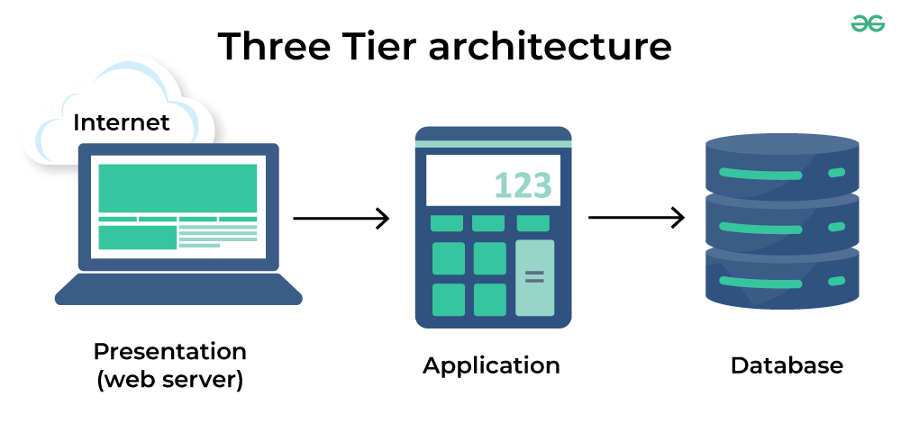

Introduction
THE WORLD WILD WEB OR WEB
Creation:
The World Wide Web was created in 1989 by Sir Tim Berners-Lee, a
computer scientist at the European Organization for Nuclear Research
(CERN). He envisioned a system for sharing information over the
Internet, which he called the World Wide Web. " I just took the
principle of hypertext and linked it to the principle of TCP and DNS
and then - boom! -that was the World Wide Web!"
The hypertext system allowed users to create and link documents using
hyperlinks, which could be accessed through a web browser. Hypertext was created by Ted Nelson, who coined the
term in 1965 for his Project Xanadu, though the concept has earlier roots in Vannevar Bush's 1945 "Memex" idea.
A hyperlink is a reference to data that the user can follow by clicking or tapping. A hyperlink points to a
whole document or to a specific element within a document. Hyperlinks are often used to navigate between web
pages on the World Wide Web.
Functionality:
The World Wide Web is a system of interlinked hypertext documents that can be accessed through the Internet. It allows users to access and share information, multimedia, and applications through a web browser, such as Google Chrome, Mozilla Firefox, or Safari.
Impact:
The World Wide Web has had a profound impact on society and the world. It has revolutionized the way we communicate, access information, and conduct business, and it has transformed the global economy. The World Wide Web has become an essential part of our daily lives, and its influence and impact will continue to grow in the future.
Web Evolution

The World Wide Web has evolved significantly since its creation in 1989. The Web has gone through several stages of development, each marked by technological advancements and changes in the way we use the Web. The evolution of the Web can be divided into three main stages: Web 1.0, Web 2.0, and Web 3.0.
-
Web 1.0:
Web 1.0, also known as the "read-only" Web, was the first stage of the Web. During this stage, the Web was primarily used to access information and read content. Websites were static and one-way, with users passively consuming information. The Web was mainly used for publishing and sharing information, and there was little interaction between users and websites.
-
Web 2.0:
Web 2.0, also known as the "read-write" Web, is the second stage of the Web. During this stage, the Web became more interactive and dynamic, with users actively participating and contributing content. Web 2.0 introduced social media, blogs, wikis, and other collaborative tools that allowed users to create, share, and interact with content. The Web became more user-centric, with a focus on user-generated content and social networking.
-
Web 3.0:
Web 3.0, also known as the "semantic" Web, is the third stage of the Web. Web 3.0 is still in development, but it is expected to be more intelligent, connected, and personalized than Web 2.0. Web 3.0 will use artificial intelligence, machine learning, and other technologies to provide more personalized and context-aware experiences for users. The Web will become more intelligent and predictive, with applications that can understand and respond to user needs and preferences.
The following figure illustrates the semantics of information connections with respect to the semantics of
social connections over the PC era then Web 1.0 to Web 4.0.
As we can see, Web 1.0 was about linking documents, Web 2.0 was about linking people, Web 3.0 is about
linking data, and Web 4.0 is about linking intelligence.

Three Tier Architecture
What is three-tier architecture?
Three-tier architecture is a well-established software application architecture that organizes applications into three logical and physical computing tiers: the presentation tier, or user interface; the application tier, where data is processed; and the data tier, where application data is stored and managed.
-
Presentation tier:
The presentation tier is the user interface and communication layer of the application, where the end user interacts with the application. Its main purpose is to display information to and collect information from the user. Web presentation tiers are developed by using HTML, CSS, and JavaScript.
-
Application tier:
The application tier, also known as the logic tier or middle tier, is the heart of the application. In this tier, information that is collected in the presentation tier is processed - sometimes against other information in the data tier - using business logic, a specific set of business rules. The application tier can also add, delete, or modify data in the data tier.
The application tier is typically developed by using Python, Java, Perl, PHP or Ruby, and communicates with the data tier by using API calls.
-
Data Tier:
The data tier, sometimes called database tier, data access tier or back-end, is where the information that is processed by the application is stored and managed. This can be a relational database management system such as PostgreSQL, MySQL, MariaDB, Oracle, Db2, Informix or Microsoft SQL Server, or in a NoSQL Database server such as Cassandra, CouchDB, or MongoDB.
In a three-tier application, all communication goes through the application tier. The presentation tier and the data tier cannot communicate directly with one another.
Benefits of three-tier architecture
Again, the chief benefit of three-tier architecture is its logical and physical separation of functionality. Each tier can run on a separate operating system and server platform - for example, web server, application server, database server - that best fits its functional requirements. And each tier runs on at least one dedicated server hardware or virtual server, so the services of each tier can be customized and optimized without impacting the other tiers.
Other benefits (compared to single- or two-tier architecture) include:
-
Faster development:
Because each tier can be developed simultaneously by different teams, an organization can bring the application to market faster. And programmers can use the latest and best languages and tools for each tier.
-
Improved scalability:
The three-tier architecture can scale to accommodate more users by adding more servers to the application tier or more servers to the data tier. Any tier can be scaled independently of the others as needed.
-
Improved reliability:
An outage in one tier is less likely to impact the availability or performance of the other tiers.
-
Improved security:
Because the presentation tier and data tier can't communicate directly, a well-designed application tier can function as an internal firewall, preventing SQL injections and other malicious exploits.
URL
A URL (Uniform Resource Locator) is a web address used to access a resource on the Internet. A URL consists of several components, including the protocol, host name, server's port number, hierarchical portion, query parameters, and fragment. Each component of a URL serves a specific purpose and helps the browser locate and retrieve the desired content.
For example, consider the following URL:
http://host.company.com:80/a/b/c.html?user=Alice&year=2008#p2
In this URL:
-
Protocol (http):
identifies the protocol used to fetch the content. Other protocols include HTTPS, FTP, and mailto.
-
Host name (host.company.com):
is the name of the machine to connect to. It can be an IP address or a domain name. The host name can be followed by a colon and the server's port number.
-
Server's port number (80):
allows multiple servers to run on the same machine. The default port number for HTTP is 80, and for HTTPS is 443. If no port number is specified, the browser uses the default port number for the protocol. Other protocols have different default port numbers. Here is a table of some common port numbers:
Protocol Default Port Number HTTP 80 HTTPS 443 FTP 21 SMTP 25 POP3 110 IMAP 143 -
Hierarchical portion (/a/b/c.html):
is used by the server to find the content. It can include directories, files, and anchors. The hierarchical portion can be followed by a question mark and query parameters.
-
Query parameters (?user=Alice&year=2008):
provide additional parameters. They are separated from the hierarchical portion by a question mark and from each other by an ampersand. Query parameters are used by the server to process the request. For example, in this URL, the query parameters are "user=Alice" and "year=2008".
-
Fragment (#p2):
tells the browser to scroll the page to the fragment (in this case, the anchor tag with the id "p2").